An ekklesia operating on Kingdom principles. One ministry. Three expressions. Three decades of obedience.
"Write the vision, and make it plain upon tables, that he may run that readeth it."
— Habakkuk 2:2
The Universal Gospel Fellowship Center exists to disciple the remnant — those who will not compromise the Gospel of Yasha for cultural acceptance, denominational approval, or institutional comfort. We operate as an ekklesia, not a 501(c)(3). We do not chase mass appeal. We pour ourselves into the few who will say yes to the narrow way and walk it to the end.
We disciple in inner healing, deliverance from generational and personal strongholds, and the field-tested application of Scripture to the real burdens of real people. We meet the hurting where they are — at truck stops, in parking lots, on the side of the highway, in housing projects, behind the gates of foster-care facilities, and in their own kitchens. The Bride does not wait for the broken to find her. She goes.
— Pastor Leslie Ann Street · January 13, 2015
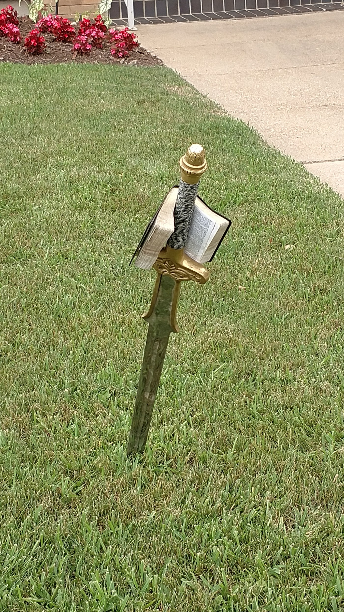
"And take the helmet of salvation, and the sword of the Spirit, which is the word of God."
— Ephesians 6:17
We have planted our stake. The Word rests on the hilt. We will not be moved.
The marketplace tested this ministry before the pulpit ever did. The credentials below are federal, contractual, and on the record.
She is not a cartoon character invented for marketing. She is a flesh-and-blood mare who holds Certificates of Registry with five different breed associations — a WORLD CHAMPION HALTER HORSE, winning a WORLD CHAMPION HALTER MARE TITLE in 2024. Registered name: HR Alexandra. Her story horse counterpart Ally — A-L-L-Y — is the digital child of UGFC, designed to reach all ages with His-Story AND history.
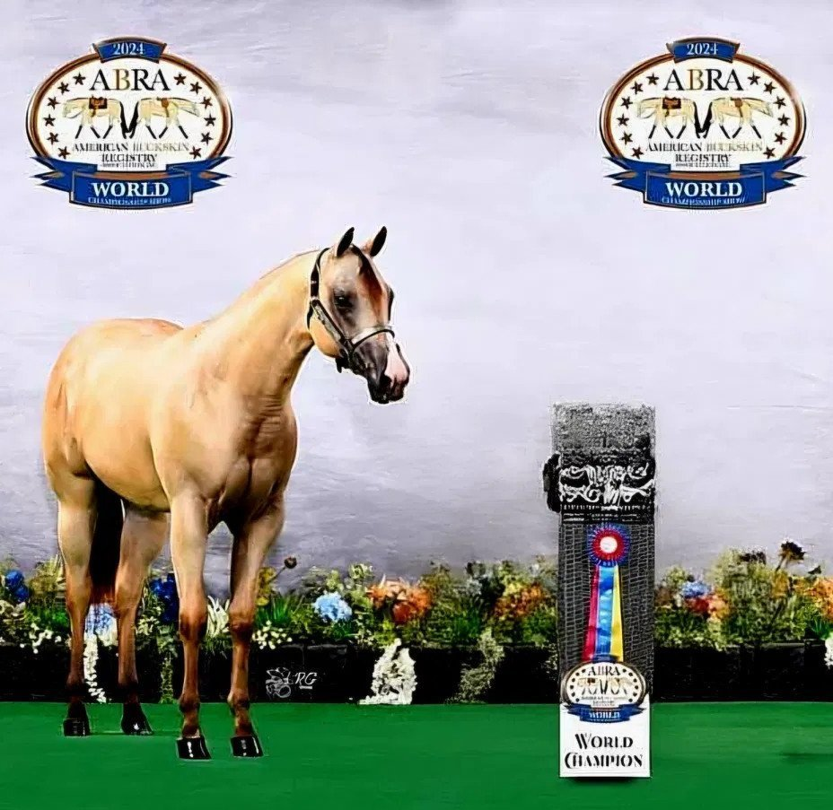
2024 World Champion Halter Mare · HR Alexandra · Championship rosette and trophy
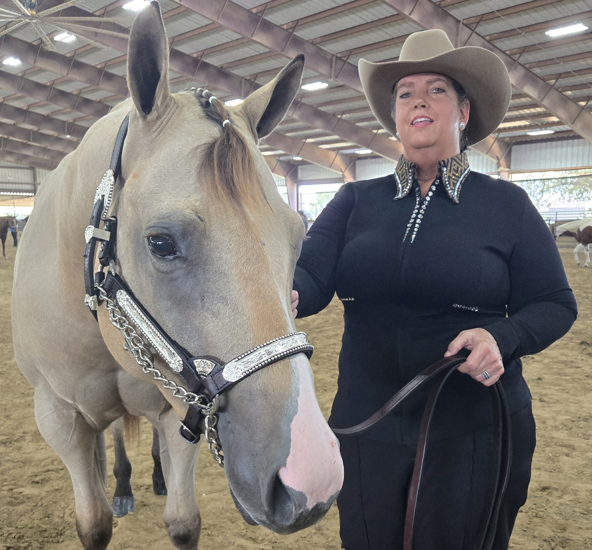
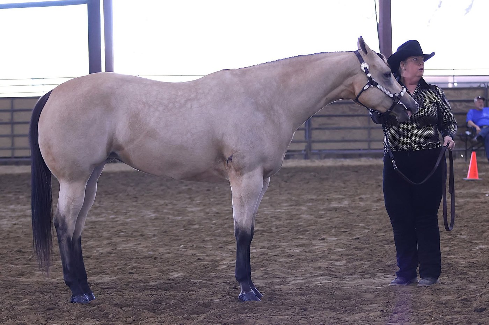
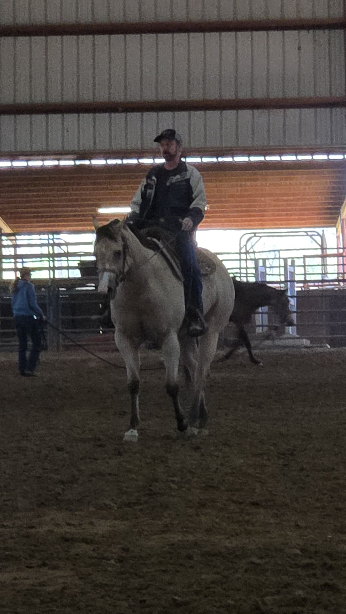
The phrase comes from the French allez hop — "Go! Jump!" — the call shouted by circus acrobats and trapeze artists before a leap. Documented in the Oxford English Dictionary, Wiktionary, and Merriam-Webster. The name carries momentum. The character carries the Gospel.
Animated series. Faith-grounded. No magic. Divine guidance only. FOR ALL AGES. The story of Ally, Thomas the Time Traveling Chihuahua, Jimmy the Time Traveling Mischievous Skunk, and Hope On A Star — guided by the silent presence of the Father.
Visit allystoryhorse.com →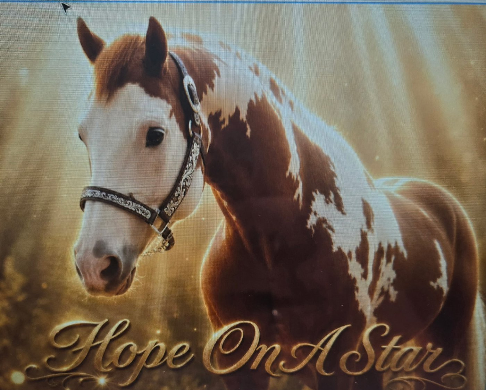
The Paint mare who carried foster children, autistic children, and the broken-hearted on her back. Bluish-white divine light. Silent presence. Heaven's own.
Hope is the angelic Paint Horse who appears in the Ally animated series. In real life she was the working mare of SWAT Church — the one who let a nine-year-old autistic boy speak his first word on her back, the one who carried a foster youth through equine therapy sessions, the one who never asked to be the star of anything. She just showed up. She still does.
A church-without-walls outreach planted in Atlanta, Texas in 2018 and still operational today. Where the institutional church will not go, SWAT goes.
Wherever Father sends us, the S becomes who we're sent to. The T — Testimony — never changes.
We meet people where they are. The acronym becomes their name. The testimony belongs to them.
Drivers carry burdens nobody at home sees. We bring water, snacks, prayer, and a listening ear to the people moving America. Loves, Pilot, Flying J, TA, Petro — wherever the eighteen-wheelers gather, we set up a table that says FREE — Drivers Only.
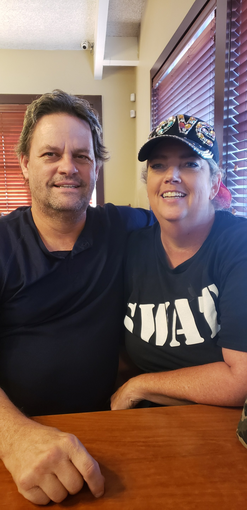
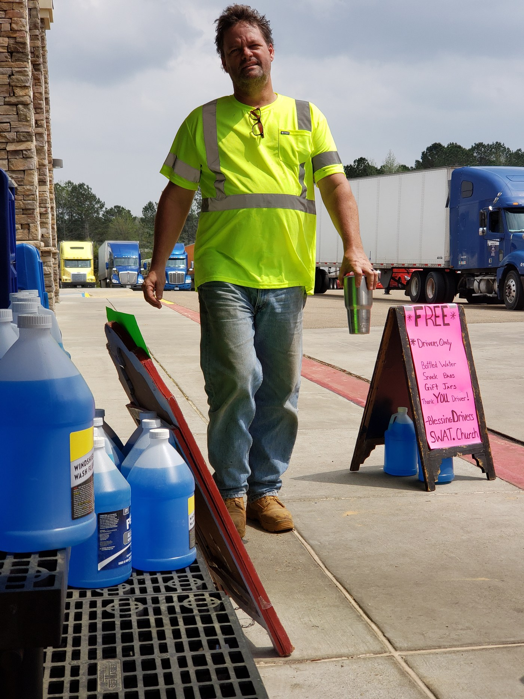
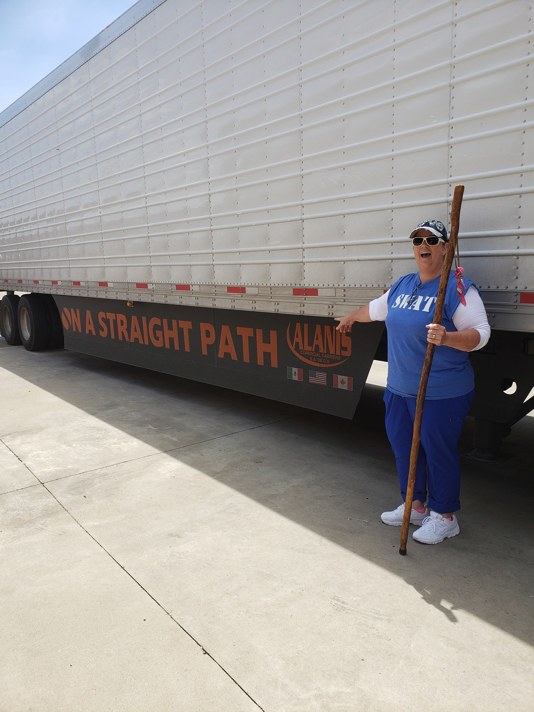
Strip mall parking lots. Homeless encampments. The patch of grass behind the abandoned strip mall where the city forgot to mow. We pull up a chair, lay out a "Welcome" sign, write "Ask & Receive" on the chalkboard, and we wait. The hungry come.
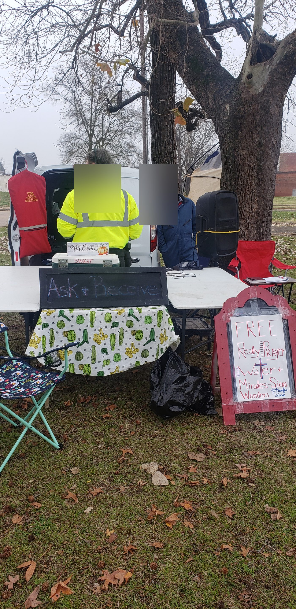
Ask & Receive — Jimmy ministering at the homeless camp · "FREE Real Prayer · Water · Miracles · Signs & Wonders to them that Believe"
The hurt the church mostly ignores. The strongholds nobody wants to name out loud. Generational chains. Religious wounds. Trauma that survived therapy. We do this work in person, by phone, by Zoom, and by FaceTime — wherever the Spirit opens the door. We teach as well as practice — online Scripture study, deliverance video teaching, and live application.
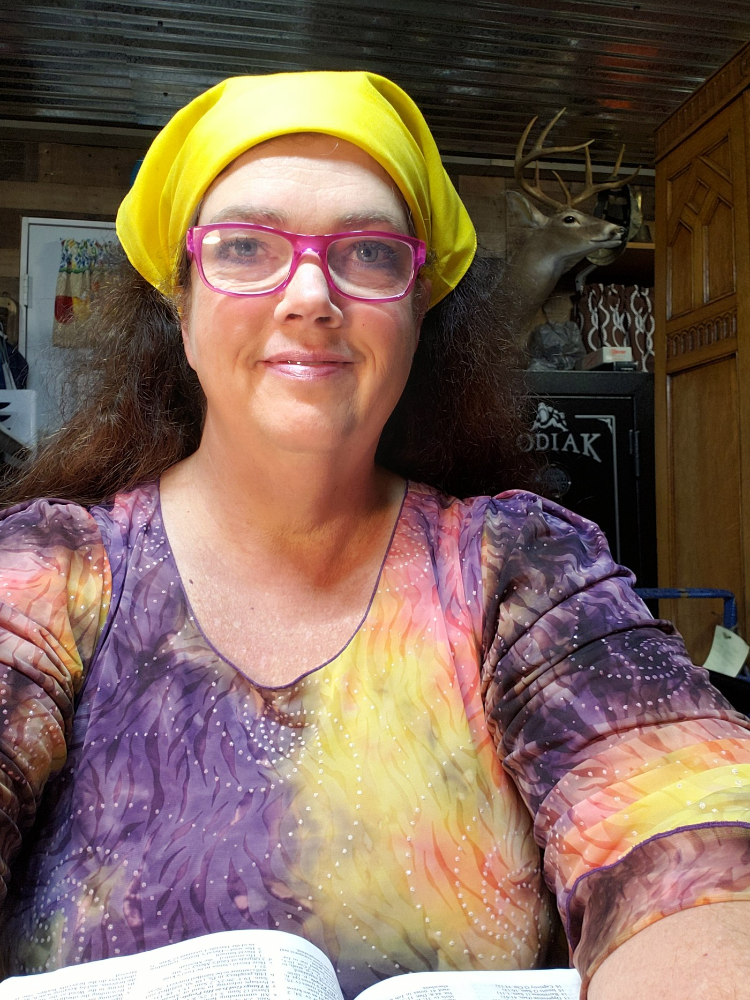
Pastor Leslie teaching an online deliverance study · Head covered as her daily public practice, honoring Yasha and her husband
"I have chosen you, and ordained you, that ye should go and bring forth fruit, and that your fruit should remain." Two decades of documented lives. State authorizations. County endorsements. Independent third-party confirmation. Names withheld to honor the dignity of those who walked the road with us. The evidence stands.
In 2022, Jimmy and Leslie — under SWAT Church — became an authorized ministry with the State of Texas for the right to minister to foster children. The authorization came after Leslie ministered to a 16-year-old foster child who attended a church Leslie also attended. After Leslie kept the young woman from running away from the Mosaic House in Atlanta, Texas — a subsidiary ministry of Cornerstone Assembly of God Atlanta (Pastor Richard Wade at that time) — she was allowed to conduct Equine Therapy sessions with the child.
Child Protective Services background-checked Jimmy and Leslie and qualified them to minister to "any child in their system" across Cass and surrounding counties.
Several weeks of Equine Therapy sessions followed at SWAT Church. Two years later, in 2024, a social worker confirmed: the child had turned 18, was in a program in Texarkana, and was thriving — and the social worker affirmed that the equine therapy received through SWAT Church had benefited her while in the system.
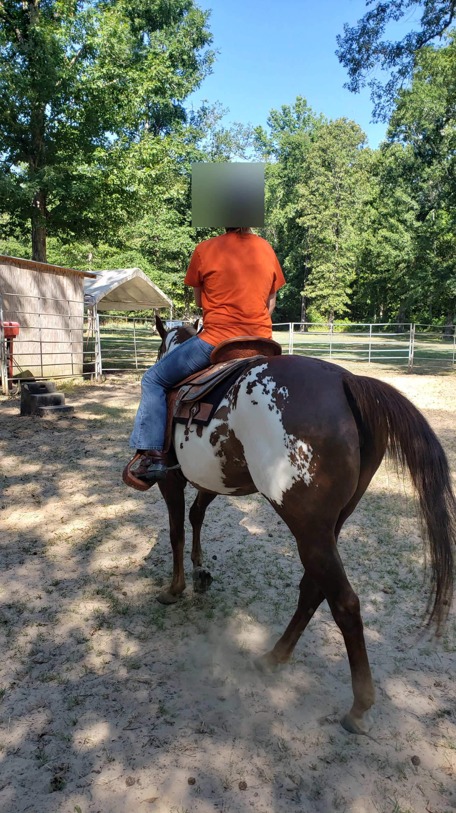
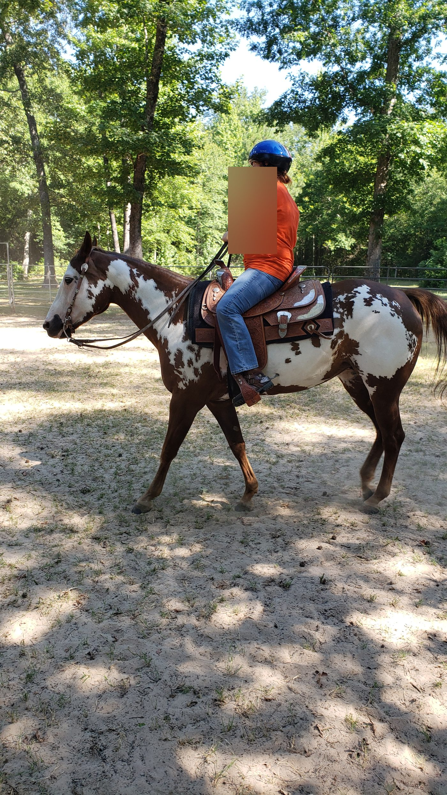
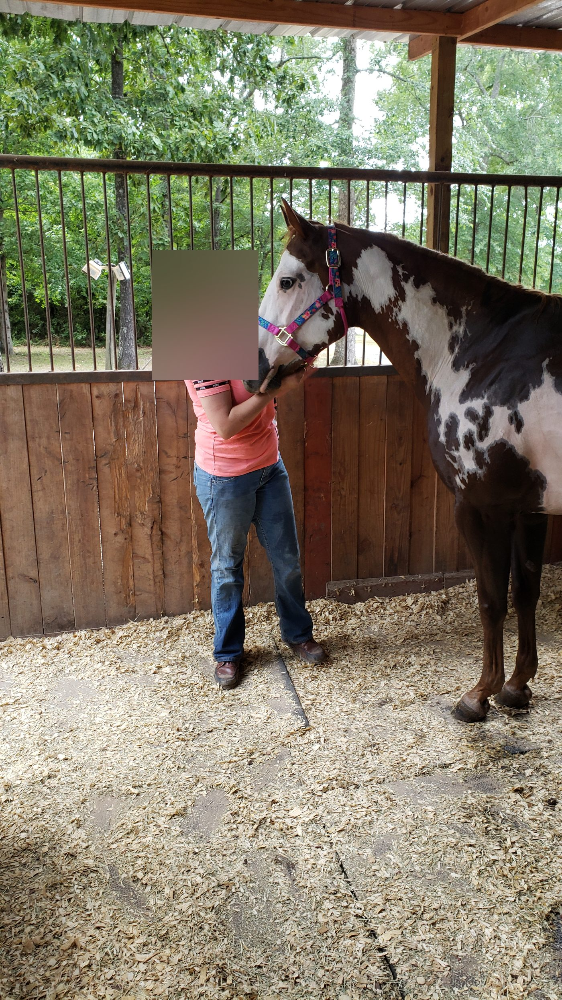
Names and faces of minors withheld. Faces are blurred to protect privacy. All work conducted under CPS authorization.
June 2023. A young boy mounted on Hope On A Star, his mother walking alongside leading the mare, a ministry volunteer steadying him on the far side, Leslie behind the camera narrating and documenting. Permission to record was given in advance by the mother. Faces obscured here to honor that trust as we share publicly.
This is what equine therapy at SWAT Church looks like. Not a clinical setting. Not a credential-flexing performance. A mother actively participating in her child's healing. A horse who knows her job. A ministry team that knows when to lead and when to let the Spirit work in silence.
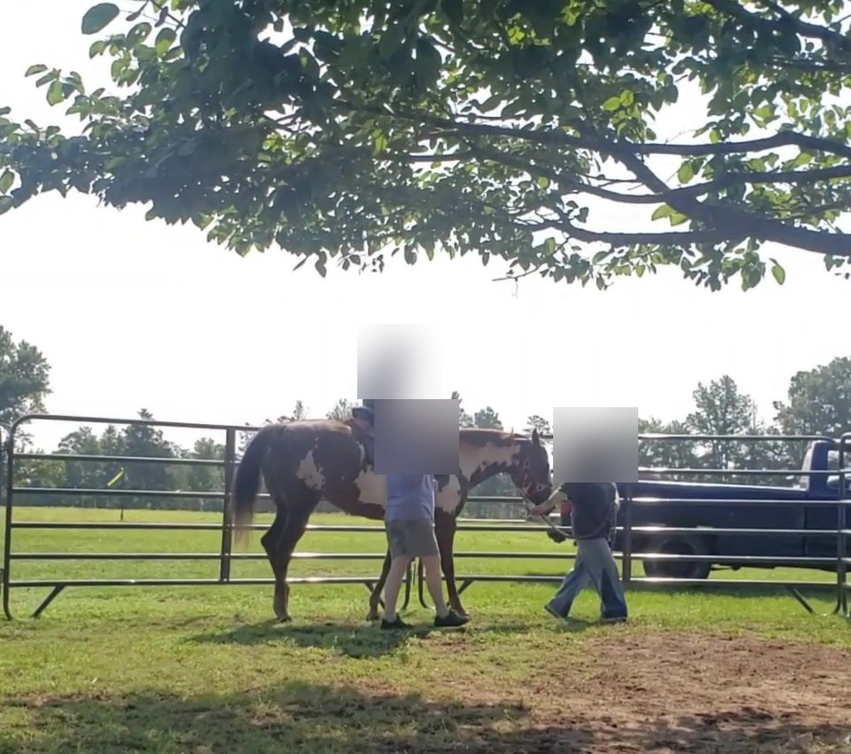
Equine Therapy session · SWAT Church · June 2023 · Faces blurred to honor consent and protect minors.
Years ago, during the Ladonia era of this ministry, a young boy living with autism — who had not yet spoken a word in his life — was brought to our ranch by his family. We carefully and prayerfully began equine sessions, using one of our many able ministry horses, MM Scooza Me.
On his third ride, mid-step, while the horse walked steadily beneath him, the boy spoke. The word was "DAD."
The family wept. We wept with them. The horse just kept walking.
We do not credit the horse. We do not credit ourselves. We credit the Father who designed a child to find his voice the moment he was carried on the back of one of His own creatures.
No names. No photos. No location. No identifying detail. The testimony is shared only at the most general level to protect the privacy of the family and the dignity of the young man, now grown.
From 2005 to 2016, Fannin County, Texas allowed Jimmy and Leslie to operate UGFC out of Apartment 9 at 610 Paris Street in Ladonia — a county-owned housing authority unit. Eleven years. No rent. No water. No electricity charged. That is the level of trust a county government extends to a ministry it believes in.
During those eleven years, the statistics on that property changed. Teen pregnancies dropped. School graduation rates rose. Drug deals declined. Prostitution declined. Alcohol abuse declined. We ran mini-camps for under-privileged children — free of charge — bringing them to the ranch to learn about horses and to ride. We hosted back-to-school outreaches, Christmas drives, and annual Toys for Tots distributions. The "projects" became a better place because the Gospel showed up and stayed for over a decade.
When Leslie left Ladonia in 2017 and called Fannin County two years ago for a reference to open ministry at the housing authority in Atlanta, Texas, the county said yes. October 2023 — outreach began at the new location. The model reproduced. The fruit remains.
Michael came to us at sixteen years old, seeking high-school graduation credit working with horses. He chose Leslie's horse Ticon. He chose us. We chose him back.
In 2001, at the World Championship Palomino Show in Tulsa, Oklahoma, Michael walked into the halter arena with Ticon at the end of his lead shank — and walked out as a Reserve World Champion. A teenager on the biggest stage in his breed association, presenting at halter a Palomino gelding he had loved into shape.
After graduation, Michael worked with us at the moving company, lived for a time with Leslie's mother, became part of our family. He is a grown man now living with his mother in south Texas. We are still in touch today. Michael authorized the use of his name and these photographs.
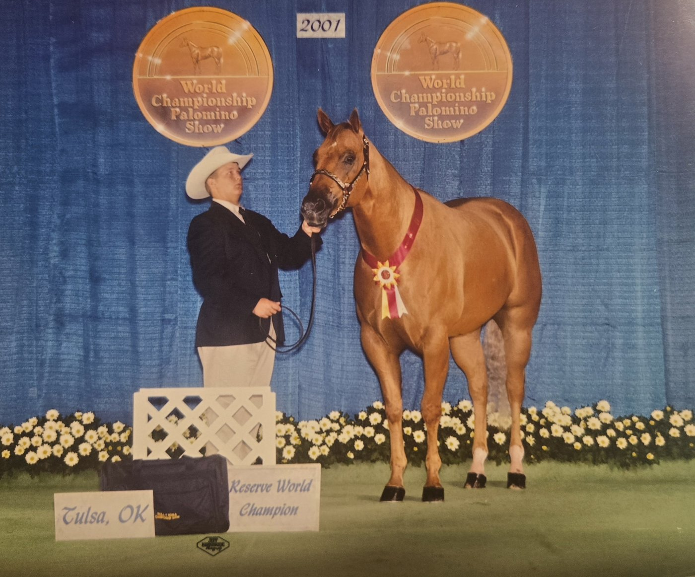
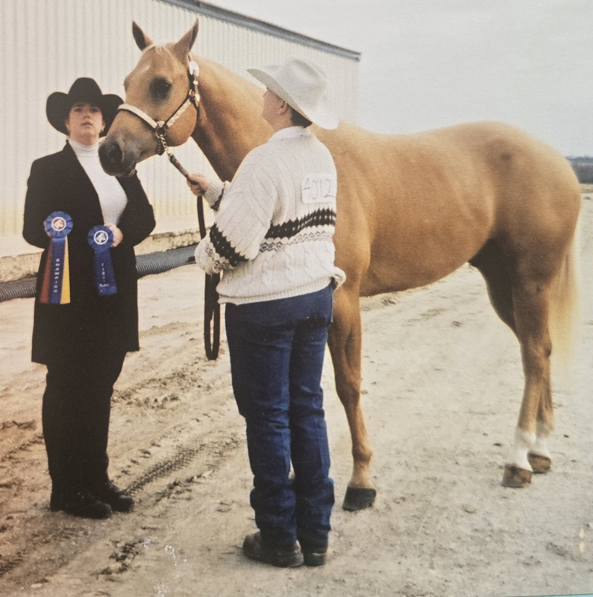
The housing-authority outreach model that Leslie carried in Ladonia for eleven years did not begin with Leslie. It began with Christine Bailey.
Twenty years from origin to reproduction. Christine poured into Leslie. Leslie poured into Ladonia. Ladonia opened the door to Atlanta. The fruit remains. The fruit reproduces. This is John 15:16 made concrete.
Twenty-six years of independently-published documentation — newspapers, chamber publications, and community press that observed this work before any of it had a website.
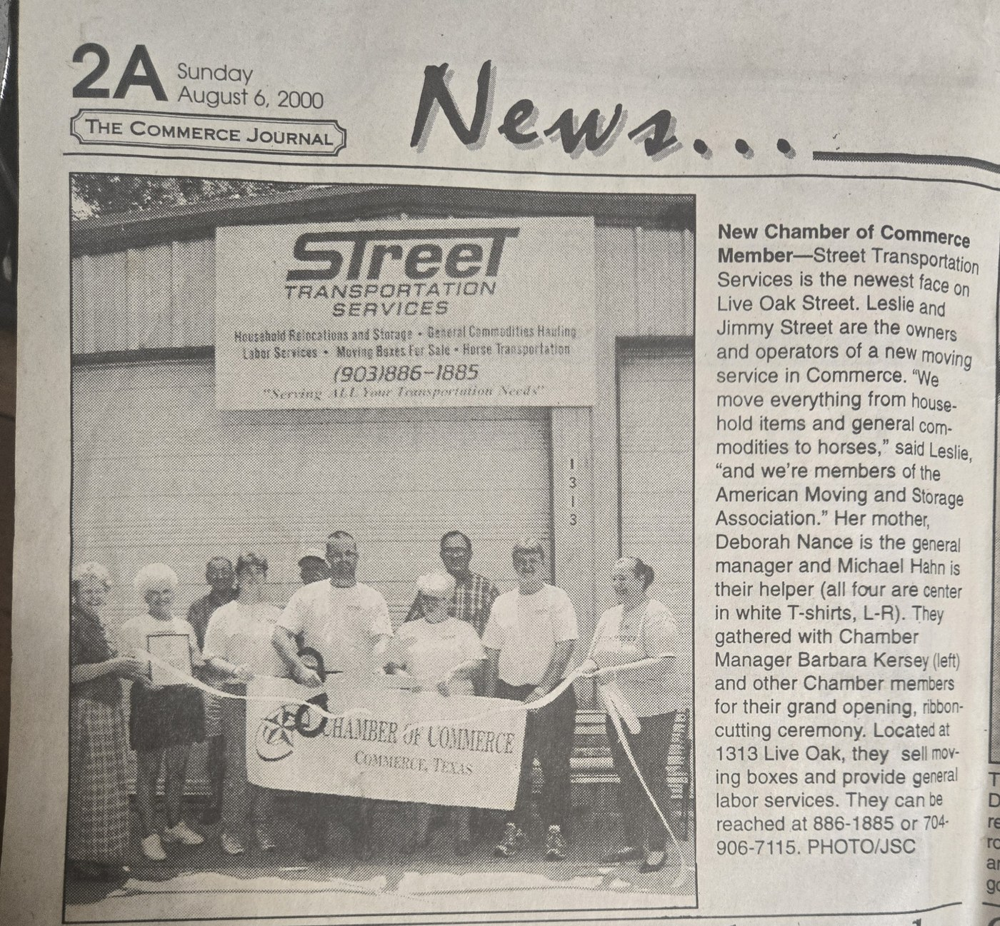
Ribbon-cutting at 1313 Live Oak. Leslie and Jimmy Street with mother Deborah Nance, Michael Hahn, and Chamber Manager Barbara Kersey.
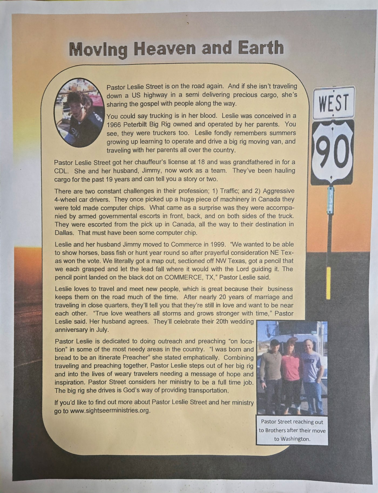
The 1966 Peterbilt origin, the pencil-on-the-map move to Commerce, nineteen years of OTR team driving, and a marriage approaching its twentieth year.
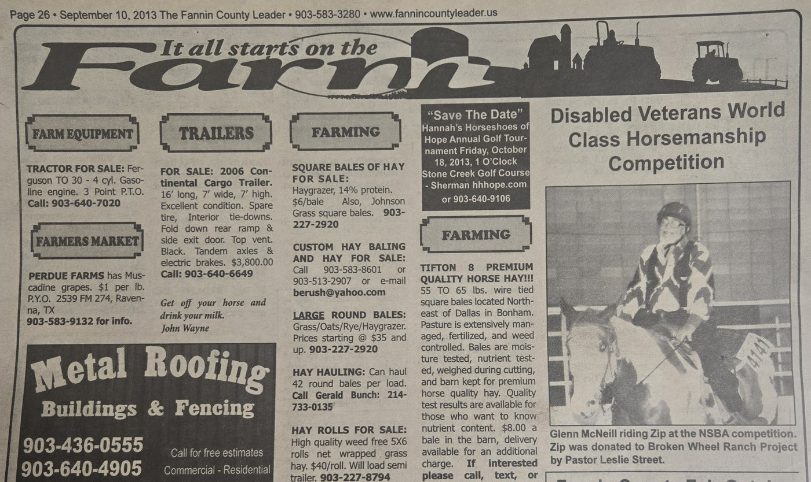
Glenn McNeill (UGFC Ladonia member 2006–2016) participating at the NSBA competition with Zip — a horse donated to the Broken Wheel Ranch Project by Pastor Leslie Street.
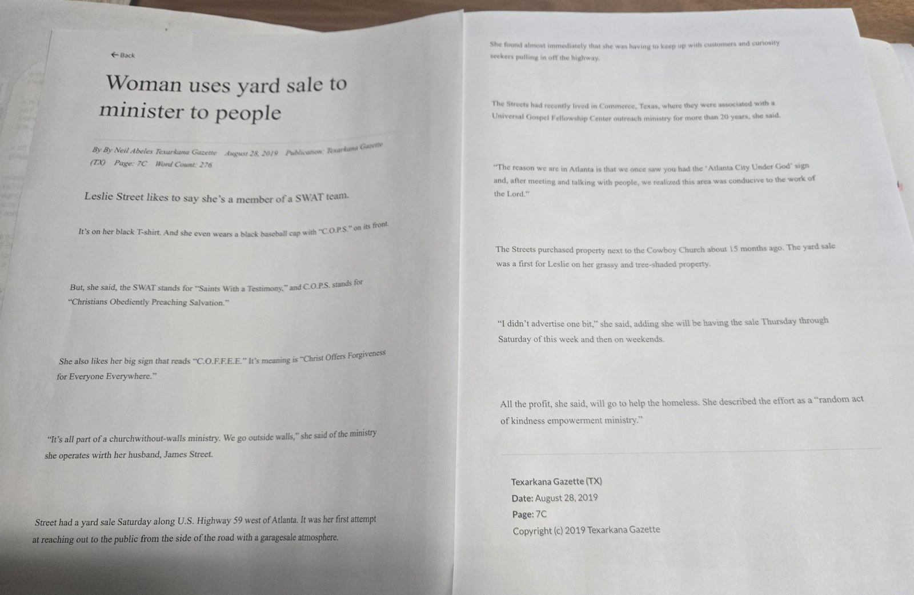
Leslie's "church-without-walls" ministry, the move to Atlanta, the 20+ year UGFC outreach history.
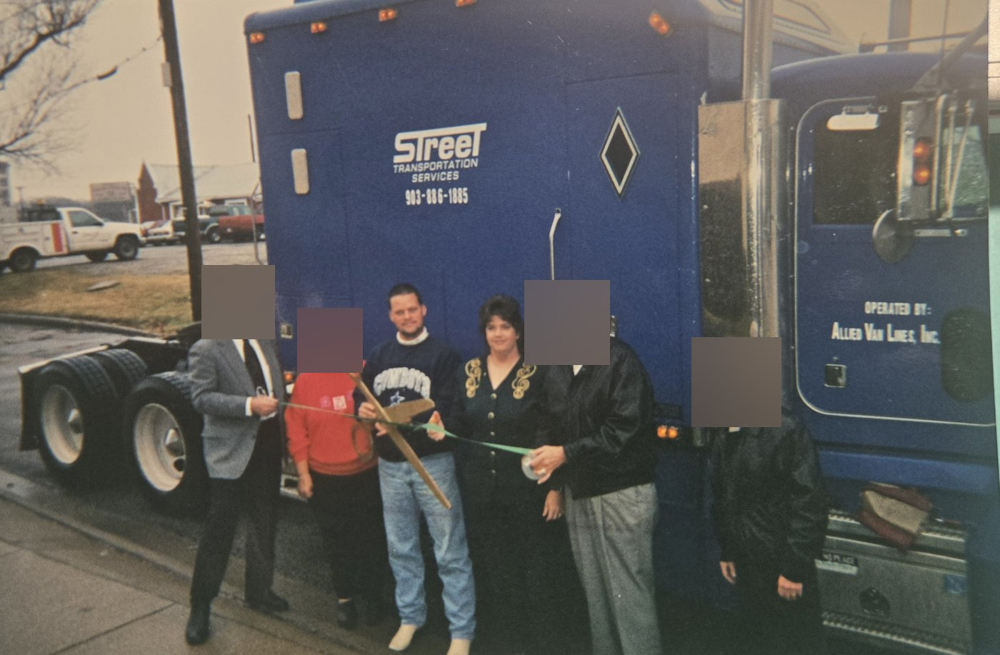
Street Transportation Services · Commerce, TX · Year 2000 grand opening ribbon-cutting at the original blue Peterbilt — Allied Van Lines partnership · The Streets, family, and Commerce Chamber leadership
We do not offer a shelf of products. We offer a gift and a journey. Begin with the free gift below. When your heart is ready for the whole road — walked with someone beside you — the 66‑Day Gauntlet is your next step. The Gauntlet is a suggested seed offering — a workman is worthy of their hire (Luke 10:7, Galatians 6:6). Yasha Himself was not a 501(c)(3); He supported the work He came to do. We follow His model.
⚠️ Ministry services are spiritual in nature. We are not licensed medical, psychological, or counseling providers. We do not promise outcomes. Results depend on the willingness of the person to do the work. NO REFUNDS ONCE ACCESSED — all offerings final at point of payment / point of access. See Important Information & Legal for full disclosures.
A guided prayer audio + one‑page companion · yours to keep
We will send your gift to your inbox. We never sell your information. See our Privacy Policy.
66 days · mentored and walked with you · not self‑paced, not alone
⚠ NO REFUNDS ONCE ACCESSED
Suggested seed offering · Access granted at first payment · Ministry not therapy
Deeper, one‑on‑one mentorship and ordination come later — by invitation, after the journey, never as a price tag on a stranger’s pain. If the Spirit is drawing you toward more, reach out and we will talk.
We do not promise outcomes. Healing is the Spirit's domain. Our domain is faithfulness — to the Word, to the work, and to the person walking through it. Results depend on the willingness of the seeker to do the work alongside us. We have spent thirty years doing this work. We have watched lives turn. We have also watched lives walk away. The difference is always the same: willingness.
If you are a hurting parent reading this and wondering whether your child can be helped — read the Fruit That Remains section. The evidence is there. The fruit speaks. Then ask the King whether He is leading you here.
Separate from the priced offerings above, three streams of freewill offering directly support the daily operations of the ministry. Contributions are NOT tax-deductible — UGFC is not a 501(c)(3). Sow as the Spirit leads.
Housing · shoeing · veterinary care · oats and hay for HR Alexandra (Ally) and the rest of the working herd.
Fuel · supplies · hot meals · water · prayer-station equipment for the church-without-walls outreach.
General operations · website hosting · administrative costs · wherever the Spirit directs the funds.
The Universal Gospel Fellowship Center operates as an ekklesia — a Scripture-defined called-out body — and intentionally does NOT hold 501(c)(3) status with the Internal Revenue Service. This means: your gifts to UGFC are NOT tax-deductible. We do not file with the IRS in exchange for the right to remain unmuzzled in the pulpit. This is a doctrinal choice. We invite you to sow only if the Spirit confirms it.
A real person reads every message. We do not use auto-responders for ministry contact. Allow up to 72 hours for a response — Leslie may be on the road.
For ministry inquiries, applications, or pastoral contact.
Universal Gospel Fellowship Center
P.O. Box 134
Atlanta, Texas 75551
Bishop Charlie Chancellor
Diana, TX
Church of God (Cleveland, TN)